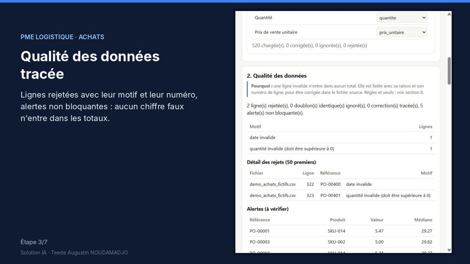
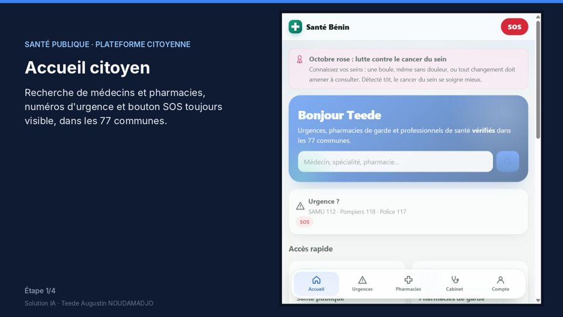
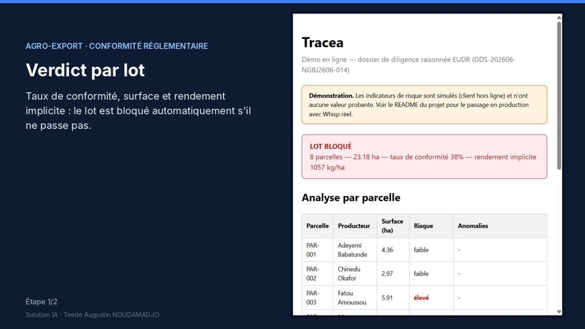

Points clés
- Outils d'analyse de données métier (achats, ventes, marges, fournisseurs)
- Contrôle de conformité réglementaire, par exemple EUDR
- Plateformes web et mobiles (PWA) et back-offices sécurisés
- Automatisation et IA au service des équipes
- Méthode : diagnostic, prototype rapide, itérations, déploiement sécurisé, passation
Aperçu



Auteur
Teede Augustin NOUDAMADJO, Data Scientist Junior à Lyon. Retrouvez la documentation complète, le code et la vidéo de démonstration sur GitHub.